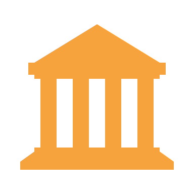

ISA2
Table of Contents


Digital Government Factsheet 2019
Norway
ISA2
Country Profile 3
Digital Government Highlights 6
Digital Government Political Communications 7
Digital Government Legislation 11
Digital Government Governance 15
Digital Government Infrastructure 20
Digital Government Services for Citizens 25
Digital Government Services for Businesses 34
Country Profile
Basic data
Population: 5 295 619 inhabitants (2018)
GDP at market prices: 368 546 million Euros (2018)
GDP per inhabitant in PPS (Purchasing Power Standard EU 28=100): 146 (2017)
GDP growth rate: 1.4% (2018)
Inflation rate: 3% (2018)
Unemployment rate: 3.9% (2018)
General government gross debt (Percentage of GDP): 36.2% (2017)**
General government deficit/surplus (Percentage of GDP): 5.06% (2017)***
Area: 384 802 km² *
Capital city: Oslo
Official EU language: Norwegian
Currency: Norwegian krone (NOK)
Source: Eurostat (last update: 15 March 2019), EFTA*, Trading Economics**, Fiscal Balances and public debt - OECD***
Digital Government Indicators
The following graphs present data for the latest Digital Government Indicators for Norway compared to the EU average. Statistical indicators in this section reflect those of Eurostat at the time the Edition is being prepared.
Digital Government State of Play
The graph below is the result of the latest eGovernment Benchmark report, which monitors the development of eGovernment in Europe, based on specific indicators. These indicators are clustered within four main top-level benchmarks:
User Centricity – indicates to what extent (information about) a service is provided online and how this is perceived.
Transparency – indicates to what extent governments are transparent regarding: i) their own responsibilities and performance, ii) the process of service delivery and iii) personal data involved.
Cross-Border Mobility – indicates to what extent EU citizens and businesses can use online services in another country.
Key Enablers – indicates the extent to which five technical pre-conditions are available online. There are: Identification (eID), Electronic documents (eDocuments), Authoritative Sources, and Digital Post. Digital Post refers to the possibility that governments communicate electronically-only with citizens or entrepreneurs through e.g. personal mailboxes or other digital mail solutions.
These top-level benchmarks are measured using a life-events (e.g. mystery shopping) approach. Eight life events are included in the overall eGovernment performance score. Four of these life events were measured in 2013, 2015 and 2017 and the other four were measured in 2012, 2014, 2016, and again in 2018. The life events measured in 2017 were Regular business operations, Moving, Owning and driving a car and Starting a small claims procedure. The life events measured in 2018 are Business start-up, Losing and finding a job, Family life and Studying.
Source: eGovernment Benchmark Report 2018 Country Factsheet
Digital Government Highlights
Digital Government Political Communications
In January 2019, the government presented a national strategy for digital security and a national strategy for digital security competence. The strategies describe measures for a total of approximately NOK 1.6 billion. About half goes to security expertise measures with one of the most important being a grant of NOK 497 million to the National Security Authority.
The Government is set to introduce a new digitisation strategy for the public sector. This digitisation strategy builds on the White Paper Digital Agenda for Norway and shall provide direction for public administrations to embrace change, share and reuse information more efficiently, and facilitate dialogue with users. The new strategy has been presented by the new minister of digitalisation, Nikolai Astrup, at the Digitaliseringskonferansen on 11 June 2019.
Furthermore, in the context of the Difi Strategy, a checklist is created to help central government agencies better cooperate with the municipal authorities when making new digital solutions that affect municipalities
Digital Government Legislation
The eIDAS Regulation (EU Regulation 910/2014) is a legal act on European level setting rules for secure and seamless use of electronic identification and electronic transactions in the European Single Market. Since its introduction in 2014 it has been progressively introduced in the whole EU/EEA area. The eIDAS Regulation has been incorporated into Norwegian law, coming into effect in June 2018.
Digital Government Governance
A new function, the Minister of Digitalisation been established, with Nikolai Astrup of the Conservative Party, the first minister. The Minister of Digitalisation is responsible for ICT policy, electronic communications and business-oriented ICT.
Digital Government Infrastructure
Norway manages the Nordic-Baltic eID Project (NOBID), which aims to secure borderless access to digital services throughout the Nordic-Baltic region for citizens and businesses using their own national eIDs.
Digital Government Services for Citizens and Businesses
Entur operates the national registry for all public transport in Norway, collecting data from 60 public transportation operators. The registry contains data about 21,000 daily departures on 3,000 routes. This data is open and free of use for app and service developers. Based on this registry Entur also provides Norway’s public transport route planner. Travelers can plan journeys door to door across Norway via the Entur website.
Digital Government Political Communications
Specific political communications on digital government
Norwegian eGovernment Programme
A strong and efficient public sector is needed to ensure the positive development of the Norwegian society. The ambition of the Government is for Norway to be at the forefront of development in the digital public sector. Digitisation will generate noticeable improvements across the public sub-sectors during the coming years. Digitisation will result in both more positive and faster interaction with the public sector for citizens and businesses alike, as well as a more efficient use of public sector resources.
The objectives of the Government include:
- The public sector is to be accessible online to the greatest extent possible;
- Web-based services are to be the general rule for the public sector’s communication with citizens and businesses;
- A digital public sector is to result in improved services.
Key principles under this eGovernment programme include the following:
- The digitisation of the public sector is to free up resources for areas in need of more resources;
- Digital communication as the main form of contact for the public sector;
- The public sector is to provide unified and user-friendly digital services;
- Login to public web services is to be simple and secure;
- All citizens and businesses receive mail from the public sector in a secure digital mailbox;
- Citizens and businesses are notified via SMS text messages and e-mail;
- The necessary assistance to be provided to citizens to ensure they are able to find and use digital services;
- The development of ICT solutions to be viewed in the context of the public sector’s work processes and organisation;
- The protection of privacy and information security are safeguarded;
Digitisation measures relevant to several services are coordinated;
- The realisation of the once-only principle, which should ensure that information is provided to public administrations one single time, to reduce unnecessary burdens for citizens and business.
Digital Agenda for Norway: Digitisation vital for welfare and jobs
The Norwegian Government adopted an ICT Strategy, Digital Agenda for Norway, as set forth in the Digitisation white paper Meld. St. 27 (2015-2016) adopted in the parliamentary year 2015-2016. The Digital Agenda has two key objectives: to ensure a user-centric and efficient public administration, and to achieve value creation and inclusion through the use of digital services.
The newly adopted Strategy has five key priorities:
- A user centric focus;
- ICT should constitute a significant input factor for innovation and productivity;
- Strengthened digital competence and inclusion;
- An effective digitisation of the public sector;
- A sound data protection and information security.
Difi strategy 2017-2020
The Difi Strategy which was started in 2017 and targeted to be completed in 2020 has three priority areas:
- To achieve a smarter, more cost-efficient public sector;
- User orientation: to make sure that the public sector is adapted to its users;
- To achieve a more comprehensive public sector.
With the new Difi Strategy, the municipalities become as important as the state enterprises for Difi in terms of target groups. The focus on municipalities helps develop more effective, user-oriented, coordinated services and solutions for the public sector.
Finally, Difi is also working on launching an overview of digitisation projects in the public sector.
ICT/Information Society policy
In Norway, eGovernment is part of a wider ICT/Information Society policy, focusing to provide services to citizens and develop the required back-office. The effective use of ICT is essential to ensure the continued economic growth and high employment in Norway. Through the purposeful use of ICT, the aim of the policy is to provide the public with a growing number of electronic services. Digital self-service solutions help improve the quality, availability and flexibility for users.
An advanced use of ICT in the business and public sectors depends on a good infrastructure (broadband) and a good knowledge of ICT from the population. It is important that the technology can be used by everyone, including the visually and hearing impaired. In addition, it is necessary to increase knowledge in the R&D of ICT, by providing advanced ICT skills to succeed with the objectives of ICT policy.
The three main priority areas of that policy are:
- Ensure an information society for all, including by facilitating the supply and distribution of high-speed broadband, increasing digital literacy in the population, and ensuring a universal design of ICT.
- Contribute to innovation and value creation in business, by facilitating the development and use of services based on digital content, promoting a digital culture industry, make public data available for further use, and promoting smart, energy-efficient ICT solutions in transport, energy and construction. The digitisation of business processes and the development of innovative solutions for the healthcare sector add also significantly value.
- Digitise public services, by coordinating ICT projects that have an impact across the public sector, promoting the development of self-service solutions, adapting regulations to promote digital solutions, and ensuring that common ICT solutions are established and made available to the rest of management
Digital 21
Digital21 was initiated by the Ministry of Trade and Industry as a result of recommendations in the industrial report, Meld. St. 27 (2016-2017) Industry - Greener, Smarter and More Innovative. Digital21 is a government-elected committee to provide advice and recommendations to the government on how to facilitate business development and utilisation of new expertise, technology and research to digitise. The purpose is to create a strategy across industries and competence environments, where key actors support common goals and recommended measures.
The long-term goal of Digital21 is to support and accelerate digitalisation in the business sector. To do so Digital21 steering has identified six areas of significant importance:
- Emerging technologies
- Research, development and innovation
- Competence
- Computer resources and infrastructure
- Safety
- Public framework
Digital21 has established expert groups in each of these six areas.
Key enablers
Access to public information
No political communication was adopted in this field to date.
eID and Trust Services
No political communication was adopted in this field to date.
Security aspects related to digital government
National strategies for Digital Security
In January 2019, the government presented a national strategy for digital security and a national strategy for digital security competence.
The strategies describe measures for a total of approximately NOK 1.6 billion. About half goes to security expertise measures with one of the most important being a grant of NOK 497 million to the National Security Authority.
Interconnection of base registries
No political communication was adopted in this field to date.
eProcurement
Programme for digital procurement
By establishing the Program for digital procurement, Difi aims to streamline and improve public procurement by fully digitising the procurement process. It will last until 2024 and the direct implementation costs are expected to be NOK 91 million.
IT shall provide great benefits for the business sector in the form of simpler processes, less handling of paper documents and extra reuse.
An all-digital procurement process streamlines an important and resource-intensive process and facilitate it, take less time and become more attractive to business, especially small and medium-sized businesses, to participate in public procurement competitions.
For public clients, full digitisation of the procurement process involves resource savings and increased quality as well as greater transparency. Difi estimates the potential quantitative gains directly related to digitisation to be approximately NOK 3.6 billion in the investment period.
Domain-specific political communications
Transportation sector public data strategy
The purpose of this strategy is to support the increased use of open public data from the transportation sector.
Data analysis can help optimise processes, decisions, and forecasts of future events. At the same time, increased use of data can contribute to efficiency, innovation and business development. Data is the "fuel" in the digital economy and in the increasingly digitalised transport sector. The potential of increased use of open public data from the transport sector is considerable.
To support this trend, the availability of public data from the state-owned enterprises sector needs to be extended.
2025 Geodata strategy
Geographic information is information about objects, events and conditions where the location is one part of the information. The term is often abbreviated to location data or geodata.
The 2025 Geodata strategy was launched by the government on 1 November 2018 and aims at addressing sectoral agencies at various levels from government, computer manufacturers, technology providers, entrepreneurs and users in all sectors - and with the Mapping Authority as a national spatial data coordinator.
Interoperability
Norwegian architectural framework for interaction
Norwegian architectural framework for interaction, published in June 2018, shall help enterprises to define, design, develop and manage digital services and the exchange of data with the public sector.
The framework provides access to a common toolbox that contains principles, concept definitions, models and guidelines for digital interaction. It contributes to increased interoperability and interaction ability in the development of digital solutions.
Emerging technologies
Powered by Nature –Norway as a data centre nation
The Government wants Norway to be an attractive nation for data centres and other data-centric industries. In this regard, the Ministry of Trade, Industry and Fisheries published in February 2018 the Powered by Nature – Norway as a data centre nation.
As the future unfolds data, it will become an increasingly important resource and input for the business community as well as for society in general. This represents a major economic opportunity for Norwegian businesses and society and will be a key to the Government’s policies and priorities going forward.
Digital Government Legislation
Specific legislation on digital government
Public Administration Act
The Public Administration Act states procedure in cases concerning the public administration. The act states that the public sector communicates digitally with citizens by default, unless they choose to opt out.
Regulation on Electronic Communication with and within the Public Administration
The Regulation on Electronic Communication with and within the Public Administration is intended to promote predictability and flexibility, and to facilitate the coordination of secure and appropriate technical solutions.
Key enablers
Access to public information
Constitution of Norway
According to Article 100, everyone has a right of access to documents of the State and municipal administration, as well as a right to follow the proceedings of the courts and democratically elected bodies. Limitations to this right may be prescribed by law to protect the privacy of the individual or for other such purposes. It is the responsibility of the State authorities to create the conditions that facilitate open and enlightened public discourse.
Freedom of Information Act
The Freedom of Information Act No. 69 of 19 June 1970 was repealed by Act No. 16 of 19 May 2006 relating to the right of access to documents held by public authorities and public undertakings. The purpose of this Act is to facilitate an open and transparent public administration, and thereby strengthen freedom of information and expression, democratic participation, legal safeguards for the individual, confidence in public authorities and control by the public. Furthermore, it shall ease the re-use of public information.
Re-use of Public Sector Information
Norway has notified the full transposition of the European Directive on the re-use of Public Sector Information (PSI Directive). The directive is implemented in the Freedom of Information Act.
eID and Trust Services
eSignatures Legislation
Act No. 81 of 15 June 2001 relating to electronic signature (Electronic Signature Act) contains detailed provisions for the electronic identification of persons and gives qualified electronic signatures equal status to traditional signatures for administrative purposes. The Act, updated on 17 June 2005, implements the relevant Directive 1999/93/EC.
eIDAS Regulation
The eIDAS Regulation (EU Regulation 910/2014) is a legal act on European level setting rules for secure and seamless use of electronic identification and electronic transactions in the European Single Market. Since its introduction in 2014 it has been progressively introduced in the whole EU/EEA area. The eIDAS Regulation has been incorporated into Norwegian law, coming into effect in June 2018.
Security aspects related to digital government
Personal Data Act
The purpose of Act No. 31 of 14 April 2000 relating to the processing of personal data (Personal Data Act) is to protect natural persons from the violation of their right to privacy through the processing of personal data. It ensures that personal data is processed in accordance with the fundamental respect for the right to privacy, including the need to protect personal integrity and private life, and that personal data is of adequate quality. This Act transposes the Directive 95/46/EC of the European Parliament and of the Council of 24 October 1995 on the protection of individuals with regard to the processing of personal data and on the free movement of such data into Norwegian law.
An updated Personal Data Act came into effect July 2018, incorporating the General Data Protection Regulation.
Personal Data Regulations
The regulations on the processing of personal data (Personal Data Regulations) were laid down by the Royal Decree of 15 December 2000 pursuant to Act No. 31 of 14 April 2000 on the processing of personal data (Personal Data Act), as amended on 23 December 2003.
Interconnection of base registries
Population registry
The Population Registry Act is divided into six different chapters:
- the organisation of the registry;
- the information and notification requirements;
- confidentiality;
- the use of the registry´s information;
- penalty clauses;
- the domicile registration of the cabinet members and the members of Parliament.
The Act positions the population registry as a central national registry, which includes records of persons, who are or have been residents of Norway, who were born in Norway and who were assigned ID numbers. The State must ensure the maintenance of the population registry, bearing its costs. The information in the registry is gathered for tax, electoral and population analyses by local tax assessment offices, and is overseen by the Directorate of Taxes (Skattedirektoratet). Information from the registry, e.g. names, addresses, citizenship, identification numbers, employment and civil status of individuals, is only accessible by authorised public sector offices. However, citizens may apply to access the information from the registry for legal purposes.
Companies registry
The companies’ registration is regulated by the Law on Legal Entities no. 15 from 3 June 1994 with its respective amendments. The Law is also known as the Entity Registration Act. The Law aims at promoting efficient use and coordination of public information regarding legal persons, sole proprietorships and other registries through the creation, organisation and operation of a national registry. It regulates the type of entities to be registered and the information to be recorded, the relationship with the affiliated registries, the notifications to the registry, the registration, the inspection of messages, and the exchange and disclosure of information. Private businesses have access to public information through the commercial distributor.
Land registry
The Law on Land Registration and the Law on the Cadastre regulate the operation of the Land Registry and the Cadastre. The first one refers to the Land Registry authorities and all the information regarding the registration procedure. The second law regulates the maintenance, access, collection and the processing of data, public fees, sanctions and fines related to the Cadastre. Although no former definition exists regarding land registry, the Law on the Cadastre defines the cadastre as “the country's official registry of the real estate property, residential buildings and addresses”.
eProcurement
Public Procurement Act
Norway notified the full implementation of Directives 2004/17/EC and 2004/18/EC of the European Parliament and of the Council of 31 March 2004 which state that in view of new developments in information and telecommunications technology and the simplification that these can bring in terms of publicising contracts, and the efficiency and transparency of procurement procedures, electronic means should be put on a par with traditional means of communication and information exchange.
eInvoicing Legislation
B2B eInvoicing is mandatory for central government entities in Norway since 2011. In 2019 new legislation has been introduced to make eInvoicing mandatory for all public sector entities, both at state and municipal level. EInvoicing is regulated by Regulation FOR-2019-04-01-444 (Forskrift om elektronisk faktura i offentlige anskaffelser).
Domain-specific legislation
eCommerce Act
The eCommerce Act No. 35 of 23 May 2003 transposes into national law the EU Directive on electronic commerce (Directive 2000/31/EC). It applies to electronic commerce and other Information Society services and regulation and control of such services by the public authorities. Its purpose is to ensure free movement of information society services within the European Economic Area (EEA).
Electronic Communications Act
The Electronic Communications Act No. 83 of 4 July 2003 aims to ensure sound, reasonably priced and future-oriented electronic communications services for Norwegian users through the efficient use of society’s resources. This is to be achieved by facilitating sustainable competition, as well as stimulating industrial development and innovation. The Act regulates the transmission of electronic communications in addition to the associated infrastructure, services, equipment and installations.
Interoperability
No legislation was adopted in this field to date.
Emerging technologies
No legislation was adopted in this field to date.
Digital Government Governance
National
Policy
Minister of Digitalisation
The Ministry of Local Government & Modernisation used to be responsible for the Department of ICT Policy and Public Sector Reform. In 2018, this department has received a dedicated Minister, Namely the Minister of Digitalisation. All ICT responsibilities, ICT policy, electronic communications and business-oriented ICT have been transferred to the mandate of the Minister of Digitalisation. In particular, it is responsible for the administration and modernisation of the public sector as well as national ICT policy, including the supervision of the Agency for Public Management and eGovernment (Difi). The Minister of Digitalisation fulfils the Local Government & Modernisation Ministry's responsibility for national policies and strategies regarding Information Society in general. The Digitalisation Minister is responsible for the coordination of the government’s efforts to reform and recondition the public sector; formulate the strategy and policy for the use of ICT in society; for the government’s administration policy, including, amongst other things, government use of organisational structures and other supervision instruments, and finally providing socio-economic and other fact-based analyses of the public administrative sector and the use of resources in the public sector. The Minister of Digitalisation oversees the Agency for Public Management and eGovernment (Difi).
 | Nikolai Astrup Minister of Digitalisation Contact details: Minister of Digitalisation Akersgat. 59 P.O. Box 8004 Dep, 0030 Oslo, Norway Tel.: +47 22 24 68 00 E-mail: postmottak@kmd.dep.no Source: https://www.regjeringen.no/en/dep/kmd/organisation/minister-of-digitalisation-nikolai-astrup/id2626348/ |
Coordination
Ministry of Local Government & Modernisation
The Ministry coordinates all aspects of national ICT policy and the modernisation of the public sector. Through its dedicated department, of ICT Policy and Public Sector Reform, it coordinates eGovernment activities, namely public sector development and ICT policy.
Agency for Public Management and eGovernment (Difi)
One of Difi's main roles is to strengthen coordination in order to help develop and renew the public sector. It seeks to ensure that ICT development becomes more standardised and coordinated and based on reuse and common solutions.
 | Steffen Sutorius Director, Agency for Public Management and eGovernment Contact details: Agency for Public Management and eGovernment (Difi) Grev Wedels plass 9 P.O. Box 8115 Dep. 0032 Oslo, Norway Tel.: +47 93068459 E-mail: steffen.sutorius@difi.no Source: http://www.difi.no/ |
Implementation
Ministry of Local Government & Modernisation, the Department of ICT Policy and Public Sector Reform
The Department of ICT Policy and Public Sector Reform is responsible for the work associated with the policy implications concerning the prevalence of ICT in the public sector. It has an active, horizontal presence in the implementation process as it is the main body responsible for initiating and administering policies related to ICT and eGovernment.
Agency for Public Management and eGovernment (Difi)
Difi implements a variety of projects and activities in such areas as: the analysis of various instruments used in public administration management; the development of human resources in state administration and ICT development in the public sector; and communication facilitation for citizens.
Support
Ministry of Local Government & Modernisation, the Department of ICT Policy and Public Sector Reform
The Department of ICT Policy and Public Sector Reform is responsible for promoting public sector development. A key area of activity is to promote government reforms, aiming at a more efficient public sector through the use of ICT.
Government Administration Services (DSS)
DSS is a government agency aimed at providing synergy for the ministries with cost effective and reliable shared services, including the running of computer systems. It reports directly to the Ministry of Local Government & Modernisation, which utilises GAS as a means of improving the way the national government functions.
Norwegian Centre for Information Security (NorSIS)
The objective of NorSIS is to provide advice and guidance on information security in Norway. It seeks to make ICT a natural part of everyday life by raising awareness about threats and vulnerabilities, advising on specific measures and contributing to forming positive attitudes in information.
ICT-Norway
ICT-Norway is an association representing the country's ICT industry. Its overall strategy is to create good business and development opportunities for its members, to promote their interests and to provide effective, value-added services. It also acts as a problem-solver and a network, information, contacts and resource provider.
Abelia
Abelia is dedicated to improving the business environment for its member companies in the knowledge and technology-based sector, as well as to promote the industry’s contribution to economic growth and social progress. By influencing policy, Abelia improves business opportunities for members and supports initiatives that stimulate demand for members' products and services. Base registry coordination.
Audit
Office of the Auditor General of Norway
The Office of the Auditor General ensures that the community's resources and assets are used and administered in compliance with the decisions of the Parliament. It is responsible for auditing, monitoring and advising all state economic activities, performing financial audits, performance audits and corporate control. The Auditor General has an independent status vis-à-vis government administration and reports the results of its auditing and monitoring activities to the Parliament.
Data Protection
Data Protection Agency
The Data Protection Agency is an independent administrative body which is entrusted with the application of data protection laws. It verifies organisations’ compliance on processing personal data, regulates the processing of sensitive data through licences and advises on matters on the protection of privacy.
Privacy Appeals Board
The Privacy Appeals Board is the appeal body for decisions made by the Data Protection Agency. It considers appeals against decisions made by the Data Protection Agency pursuant to the Personal Data Act and certain other acts.
Subnational (federal, regional and local)
Policy
Regional and Local Authorities
The general approach to eGovernment in Norway is decentralised. Norway is divided into 18 counties and 422 municipalities (2018) with independent decision-making responsibilities in the ICT area.
Coordination
No responsible organisations were reported to date.
Implementation
Regional and Local Authorities
Regional and Local Authorities carry out projects within the framework of their competences.
Support
Norwegian Association of Local and Regional Authorities (KS)
KS is an association of municipalities aiming in cooperation with its members, to contribute to ICT development by: protecting the municipal sector’s interests with respect to central authorities, suppliers and other interest groups; contributing to the development of standards and requirement specifications for the exchange of information, integration of solutions and joint tools, ideally in cooperation with central authorities; inspiring and contributing to competence development in the municipal sector through proposals and recommendations, benchmarking, development of guidelines and establishing experience exchange networks.
KS holds regular meetings with the Ministry of Local Government & Modernisation, at political and administrative levels. It also participates in several boards, committees and working committees in other ministries and various government departments that deal with ICT issues.
Base registry coordination
Tax Administration of Ministry of Finance
The Tax Administration of Ministry of Finance is responsible of the National/Population Registry.
Norwegian Public Roads Administration (NPRA)
NPRA is responsible of the Vehicle Registry.
Brønnøysund Registry Centre
The Brønnøysund Registry Centre (Brønnøysundregistrene) is a Norwegian government body that is responsible for the management of numerous public registers in Norway and is patronised by the Ministry of Trade and Industry. Among the registries that the authority governs are the Central Coordinating Register for Legal Entities, the Registry of Business Enterprises, European Business Registry, Registry of Company Accounts, Registry of the Reporting Obligations of Enterprises, Registry of Mortgaged Moveable Property, Registry of Bankruptcies, Registry of Marriage Settlements, and Registry of Political Parties. The authority is also in charge of governmental systems for digital exchange of information (Altinn), the national portal for digital communication between state, businesses and citizens. Altinn is defined as a national common component and is tasked with the exchange of information from business registries. Moreover, the Brønnøysund Registry Centre maintains the Norwegian metadata repository SERES which is a standard for the design of web forms in Altinn. The authority is also developing a common national portal for describing and finding datasets and registries in governmental authorities.
Norwegian Mapping Authority
The Norwegian Mapping Authority is responsible of the Land Registry and Cadastre. The Land Registry, serving as a central database, is fully digitised. The Norwegian Mapping Authority does registration of documents, data checking and recording. The Norwegian Cadastre is a public registry of real properties, including information on buildings and addresses. The Cadastre is administered and technically hosted by the Norwegian Mapping Authority. The municipalities undertake cadastral surveying. These two central databases are technically linked providing an integrated online service to users.
Audit
No responsible organisations were reported to date.
Data Protection
No responsible organisations were reported to date.
Digital Government Infrastructure
Portals
Norge.no portal
Norge.no is a gateway and guide to digital services from public authorities in Norway. Users can find digital services via the portal’s topic menu, search function or eight life situation descriptions.
The portal also has information about digital communication between public authorities and citizens. In particular, Norge.no presents citizens with information about the Norwegian public sector’s digital mailbox and Digital Contact Information Register.
All public authorities are obliged to send mail to citizens digitally, using a secure digital mailbox. Citizens who do not wish to receive post digitally, may opt to receive official letters and documents via paper mail. In order to use a secure digital mailbox, citizens must have an electronic ID and keep their digital contact information updated in the national contact register. The contact and reservation registry have been up and running since 2014.
Altinn portal
The Altinn portal, which has been redesigned to improve user experience, offers seamless services to ease the reporting burden imposed by government agencies. It is a solution to develop and maintain forms and work processes, together with a reporting solution to facilitate the information flow from business to government. Businesses file their reporting information to Altinn either through an Internet portal website, or by using their own internal information systems or software packages. Individuals can also file their personal income tax electronically through Altinn.
As Norway's Point of Single Contact (PSC), Altinn is tasked with the provision of all information needed by any European service provider interested in starting a business in Norway.
Standardisation portal
The Standardisation portal aims to inform its users about the standards that are mandatory or recommended for use in the Norwegian public sector. The standards treated on this website are mostly related to ICT; however, standards related to areas such as public contracts, semantics and service-oriented architecture can also be found. The main goal regarding its activities with standards within the public sector is to strive towards better coordination among public authorities and services, transparency and efficiency.
GeoNorge portal
The GeoNorge portal is the national portal for the ‘Norway Digital’ geospatial infrastructure. It is the largest open, standards-based eGovernment component in daily use in Norway. It constitutes the umbrella for a large number of geospatial eServices, making basic geographic information and a variety of thematic information readily available. The information provided by the portal enables geospatial information to be used by different communities, including public administration and environmental management bodies. The infrastructure also includes a gateway for distributing the information to non-partners and the private sector.
Moreover, GeoNorge makes available geographical data in digital format to citizens; the data is collected in a central system (Norway WEB digital download) which can be accessed by citizens via a user name and password authentication mechanism. By accessing the system, citizens can consult and download files on elevation data, administrative boundaries, transformation formulas, as well as related topics like cultural heritage, herding and many more. The system provides both county and national data.
Regelhjelp.no portal
Regelhjelp.no is a service to enterprises in need of a guide to the vast body of regulations. The website makes it easier for users to find out about requirements related to health, safety and the environment that government authorities have established for their industry. It gathers requirements set by many different agencies and presents them in a user-friendly manner, facilitating enterprises to easily acquire information on the requirements that apply to them without needing in-depth knowledge of the structure of government administration.
Networks
Current infrastructure
Norway has an adequate infrastructure for telecommunications networks, services and eGovernment which allows for system interoperability and data interchange between administrations. In certain areas, the Government has taken the initiative to support the creation of specific infrastructure as exemplified in the National Health Network which links five regional networks and provides a single information exchange platform in the health and social sectors.
Data Exchange
eHealth big data analysis
A platform for big data analysis has been established within the health sector.
eID and Trust Services
MinID
MinID allows citizens to access public services that require a medium-high level of security. Examples of such services include: applying for a loan from the Norwegian State Educational Loan Fund; applying to an upper secondary school; changing a tax return; changing a family doctor; changing an address in the National Population Register. It is used by 2.6 million Norwegians. MinID makes use of the ID-Gateway, the common platform for eID in the Norwegian public sector.
Responsibility lies within the Agency for Public Management and eGovernment (Difi).
Buypass, Commfides and BankID eID solutions
Buypass, Commfides and BankID enable citizens to access public services that require a medium and high level of security, as well as services that require the highest level of security. This applies to health information and the signing of documents, among other services. BankID is also used by citizens to access their online bank accounts.
Responsibility lies within the Agency for Public Management and eGovernment (Difi).
ID-Gateway
The DIFI provides the eID solution ID-Gateway (ID-porten) which is a common infrastructure for the use of eIDs in the public sector. The first version (1.0) of ID-Gateway was introduced in November 2009 and is currently used with MinID (the common log-in system for accessing online public services). This eID platform facilitates the use of several types of eID and offers more advanced electronic public services. Furthermore, it gives the opportunity to various entities to provide more person-sensitive services, related to health information.
Responsibility lies within the Agency for Public Management and eGovernment (Difi).
NOBID
Norway manages the Nordic-Baltic eID Project (NOBID), which aims to secure borderless access to digital services throughout the Nordic-Baltic region for citizens and businesses using their own national eIDs.
eProcurement
Anskaffelser.no portal
The Agency for Public Management and eGovernment (Difi) manages the Anskaffelser.no portal for all actors involved in public procurement. It contains tools and information, and its expertise favours efficient procurement transactions with the public sector. The portal offers advanced, complete eProcurement and eCommerce services guiding all interested parties through eProcurement stages, from planning to competitive conduct, including follow-up and liquidation.
The portal has incorporated eHandel.no, which specialises in eCommerce. The website offers extended services and information on eCommerce, the newly-established eCommerce platforms and electronic invoice. These services aim at offering easy access to comprehensive information about eCommerce and guidance on how eCommerce services can be an effective tool for better, easier and safer purchases. The purpose of 'eHandel.no' is to give public sector entities and their suppliers’ easy access to a user-friendly and affordable tool for operational eProcurement.
Doffin: public procurement database
Doffin aims to facilitate public authorities in complying with Norwegian public procurement regulations by allowing the creation and publication of tender notices. Since all notices are published on this platform, it is also a great resource for suppliers interested in business opportunities in the public sector. Tender publication is mandatory on Doffin, while eProcurement services are not. It is administered by the Agency for Public Management and eGovernment (Difi).
eInvoicing
EHF
Norway uses a standard for electronic invoicing and credit notes – EHF. All invoices to and from public sector entities uses the EHF standard format, via the Peppol eDelivery network. All recipients of electronic invoices and their contact addresses are registered in ELMA, a registry managed by Difi.
ePayment
No particular infrastructure in this field was reported to date.
Knowledge Management
National Data Catalogue
Norway launched the National Data Catalogue, a collaborative solution that replaces the previous Electronic Public Records (OEP). The tool aims to promote transparency and democracy within the Public Sector by making data more easily accessible to citizens.
The directory provides an overview of data sets that have been registered and made available by public agencies, making it both easier to search for public sector data and re-use it, for example for analytical purposes. In addition to datasets, it comprises APIs, concepts and information models.
eInnsyn
The common solution eInnsyn, based on the previous Electronic Public Records (OEP) solution, is a tool that allows central government agencies to publicise their public records online. The new solution enables more openness and accessibility regarding public information and strengthens the freedom of information. The solution was launched in January 2018.
National archival services of Norway
The national archival services have provided common standards and specifications for digital archiving, which are now used by most public organisations in the country. It should be noted, however, that compatibility between large public databases remains relatively limited.
Norway Digital programme
Norway Digital is a nation-wide programme for cooperation on establishment, maintenance and distribution of digital geographic data. The aim is to enhance the availability and use of quality geographic information among a broad range of users, primarily in the public sector. All institutions participating in the programme bring their own data into the infrastructure so as to make it available to the other partners.
Bergen Minicipality Data Lake
Bergen municipality has established a data lake. This implies that the Bergen municipality is partnering with Bouvet, a consultancy, in establishing a data lake. The project ensures sharing and reuse of date across divisions in the municipality, as well as facilitate new partnerships within innovation and digitalisation. The private sector is invited to build their own solutions on top of the data in the data lake. The beneficiaries are the people living in Bergen, the municipality’s partners and local businesses.
Cross-border platforms
European initiatives
Norway is a member of INSPIRE , EULIS and EUCARIS. The Brønnøysund Registry Centre is a member of the European Business Registry. Norway is also an active contributor the Your Europe portal.
The Brønnøysund Registry Centre and The Norwegian Maritime Authority (NMA) participate in the TOOP-project (the ‘Once-Only’ principle).
Nordic initiatives
A pilot has been implemented between Norway and Sweden on the exchange and verification of ID, based on eIDAS regulation .
Also, since 2016 there is a collaboration-project between all the Nordic governments called SmartGovernment. Nordic Innovation, an instrument under the Nordic Council of Ministers, founded the project, which is an official inter-governmental body for cooperation in the Nordic region. SmartGovernment aims to create a platform for transactional reporting of business data for small and medium businesses in order to reduce, or even eliminate the need for reporting and facilitate B2B use of information. During the 2018-2020 period the project focusses on interoperability, automated flow of data, rules for exchange of business data, and communication and stakeholder engagement. The success of SmartGovernent solutions depends on extensive access to base registries.
Last but not least, the tax authorities of Denmark, Iceland, Norway, Finland and Sweden operate the Nordisk eTax, a portal in collaboration with the Nordic Council of Ministers. The Nordisk eTax addresses people who live in a Nordic country but have income or assets in another Nordic country.
Base registries
KOSTRA
The Municipality-State-Reporting KOSTRA system allows municipalities and county municipalities to report electronically to the State data on the economy, schools, health, culture, the environment, social services, public housing, technical services and transport, and communication. KOSTRA focuses on two main purposes: provide better information about the municipalities at central and local government level; and strive for more efficient reporting.
National Register
Information on everyone living in Norway is gathered for tax, electoral and population analyses by local tax assessment offices. This information is registered in the National Register (Folkeregisteret) and is overseen by the Directorate of Taxes (Skattedirektoratet). Information from the National Register (e.g. names, addresses, citizenship, identification numbers, employment and civil status of individuals) is only accessible by authorised public sector offices. However, members of the public may apply for access to information from the National Registry for legal purposes. Applications for information from the National Registry are processed by local tax assessment offices and the Office of the National Registrar.
Altinn
A common technical platform, called Altinn, was created for the public sector to exchange data from base registries with the purposes of prefilling digital forms, reporting to the public sector and for lookup-services in the base registries, e.g. the National Registry and the Central Coordinating Register for Legal Entities. Altinn contains an authorisation module that governs access to services by the role of individuals and businesses. The businesses roles, e.g. director, board members, accountant, are managed in theEntity Registry. The Norwegian Entity Registry (or Central Coordination Register for Legal Entities, CCR) contains information about both businesses and public entities (understood as governmental agencies). A new registry, currently under development within the Brønnøysund Registry Centre, will add authorisation by proxy. This will furthermore extend the authorisation component in Altinn. The authorisation component also manages sharing of data with user's consent.
Digital Government Services for Citizens
The information in this section presents an overview of the basic public services provided to the citizens. These were identified taking inspiration from Your Europe, a website which aims to help citizens do things in other European countries – avoiding unnecessary inconvenience and red tape in regard to moving, living, studying, working, shopping or simply travelling abroad. However, the categories used in this factsheet aim to collect a broader range of information, focusing therefore not only on cross-border services, but also on national services.
The groups of services for citizens are as follows:
- Travel
- Work and retirement
- Vehicles
- Residence formalities
- Education and youth
- Health
- Family
- Consumers
Travel
Document you need for travel in Europe |
Passport |
Responsibility: | National Police Directorate, Police Districts and Stations |
Website: | https://www.politi.no/international/ |
Description: | Information and printable paper forms to be submitted enabling citizens to start the procedure to obtain a passport. |
Transport and disability |
Norwegian mobility planner |
Responsibility: | Ministry of Transport |
Website: | https://en-tur.no/om |
Description: | Entur operates the national registry for all public transport in Norway, collecting data from 60 public transportation operators. The registry contains data about 21,000 daily departures on 3,000 routes. This data is open and free of use for app and service developers. Based on this registry Entur also provides Norway’s public transport route planner “Entur”. Travelers can plan journeys door to door across Norway via the Entur website. |
Work and retirement
Working abroad, finding a job abroad, retiring |
Job search services by labour offices |
Responsibility: | Ministry of Labour, Norwegian Labour and Welfare Administration (NAV) |
Website: | http://www.nav.no/;https://arbeidsplassen.nav.no/stillinger |
Description: | Fully functional job-search online service. Vacancies are automatically published in the European Employment Services (EURES) Job Mobility Portal. |
Unemployment & Benefits |
Unemployment benefits |
Responsibility: | Ministry of Labour, Norwegian Labour and Welfare Administration (NAV) |
Website: | http://www.nav.no/ |
Description: | Specific information on unemployment benefits and entitlements can be found at the description of the Norwegian Social Insurance Scheme 2014. Full online registration and interaction available. |
Taxes |
Income taxes: declaration, notification of assessment |
Responsibility: | Tax Directorate, Local tax assessment offices |
Website: | http://www.skatteetaten.no |
Description: | The Tax Administration or Tax Directorate supplies online brochures outlining tax payment and tax return procedures in Norway. Citizens’ transactions are carried out through the local tax assessment office. Online services can also be accessed through the Altinn portal. |
VAT refunds and excise duties |
Responsibility: | Tax Directorate, Local tax assessment offices |
Website: | http://www.skatteetaten.no/ |
Description: | The Tax Directorate supplies online brochures outlining VAT payment and return claims. Bedin, as part of the Altinn’s portal, represents the Ministry of Trade and Industry and also provides business information on taxation. Online services are fully interactive and can also be accessed through the Altinn portal. |
Vehicles
Driving Licence |
Driver’s licence |
Responsibility: | Central Government, Norwegian Public Roads Administration (NPRA) |
Website: | http://www.vegvesen.no/ |
Description: | Different rules apply to persons with a driving licence issued in the European Economic Area (EEA) and to those with a driving licence issued outside this area. The NPRA has published a document entitled 'Permission to drive in Norway - how?' which outlines the new regulations concerning driving licences. Online information and forms to download are available, moreover, since September 2014, it is possible to apply for a drivers’ licence online – when applying for the first time as well as when the entitlement’s extension is needed. |
Registration |
Car registration (new, used, imported cars) |
Responsibility: | Central Government, Norwegian Public Roads Administration (NPRA) |
Website: | http://www.vegvesen.no/ |
Description: | The Norwegian on-line service Autoreg provides a range of online services related to new and used cars. It is a service and registry, provided by the Norwegian Public Roads Administration for registration of vehicles. |
Notification of sale and transfer of registration |
Responsibility: | Norwegian Public Roads Authority |
Website: | https://www.vegvesen.no/en/vehicles/Buy+and+sell/notification-of-sale-and-transfer-of-registration |
Description: | Notification of sale and transfer of registration for vehicles are online services that allow you to complete and submit the necessary information to public authorities when you are buying or selling a vehicle. The Norwegian Public Roads Authority (Statens Vegvesen) has developed the services. |
Residence formalities
Residence rights |
Announcement of moving (change of address) |
Responsibility: | Norwegian Tax Administration, National Population Register |
Website: | http://www.skatteetaten.no/en/Person/National-Registry/Moving/ http://www.norge.no/en/life_situation/moving-home |
Description: | Registering a change of address with the National Population Registry is mandatory. This is done by completing a form and sending it to the local tax office. Norway Post should also be notified. Relevant digital services can also be accessed via the Altinn portal. Norwegian residents may submit a notification of a change of address within Norway digitally. |
Document and formalities |
Housing Allowance |
Responsibility: | Norwegian State Housing Bank |
Website: | https://www.husbanken.no/english/what-is-housing-allowance |
Description: | Housing allowance is an online service that makes it easier to apply for financial support to cover housing expenses for households with low incomes. The service has been developed by the Norwegian State Housing Bank (Husbanken) |
Certificates (birth, marriage): request and delivery |
Responsibility: | Central Government, National Register |
Website: | http://www.noreg.no/ |
Description: | The intention to get married requires verification of entitlement in accordance with the Marriage Act. This verification is carried out by the National Register for Population, located in the local tax assessment office in the municipality of residence of either the bride-to-be, or bridegroom-to-be. For non-residents, applications for verification are carried out by the Office of the National Registrar. Relevant forms and all other required documentation should be submitted to the authority responsible for the National Population Registry, either locally or centrally, as stated above. |
Criminal Record Certificate |
Responsibility: | National Police Directorate |
Website: | https://www.politi.no/tjenester/politiattest/ |
Description: | The National Police Directorate’s website allows citizens to apply for their criminal record online, which is then received in their digital mailbox. |
Declaration to the police (e.g. in case of theft) |
Responsibility: | National Police Directorate, Police Districts and Stations |
Website: | https://www.politiet.no/ |
Description: | Information and forms to download for manual submission are available online. Certain categories of theft/vandalism are possible to be declared online, namely stolen bikes, mobile telephones, goods stolen from a private person in a public place and vandalism of buildings or cars. |
Digital mailbox |
Responsibility: | Agency for Public Management and eGovernment (Difi) |
Website: | http://www.norge.no/en/electronic-id |
Description: | The digital mailbox is a secure digital archive, where citizens can easily find mail from public agencies whenever they need it. There are two mailbox providers: e-Boks and Digipost. Both are approved by the Norwegian Government and comply with security standards. |
Electronic ID |
Responsibility: | Agency for Public Management and eGovernment (Difi) |
Website: | http://www.norge.no/en/electronic-id |
Description: | In order to use digital services from Norwegian public agencies, one must have an electronic ID, eID. An electronic ID confirms people’s identities when logging into digital services. There are four different electronic IDs to log into digital services from Norwegian public authorities: MinID, BankID, Buypass or Commfides. |
Housing (building and housing, environment) |
Responsibility: | Statistics Norway |
Website: | https://www.ssb.no/offentlig-sektor/kostra/ |
Description: | The Municipality-State-Reporting KOSTRA system allows municipalities and county municipalities to report electronically to the State data on the economy, schools, health, culture, the environment, social services, public housing, technical services and transport, and communication. KOSTRA focuses on two main purposes: provide better information about municipalities at central and local government level; and strive for more efficient reporting. |
Passport |
Responsibility: | National Police Directorate, Police Districts and Stations |
Website: | https://www.politiet.no/ |
Description: | Information and printable paper forms to be submitted, enabling citizens to start the procedure to obtain a passport. |
Waste |
Responsibility: | Agency for Public Management and eGovernment (Difi) |
Website: | https://www.difi.no |
Description: | The website above has information on different services related to waste, such as requesting waste permits, Order/change waste containers (available for some municipalities), et cetera. |
Elections |
Participation in Norwegian elections |
Responsibility: | Ministry of Local Government and Modernisation |
Website: | https://valg.no/en |
Description: | The website provides information on the conditions for voting when the Norwegian citizens are abroad, as well as provides addresses to foreign points where votes can be casted. |
Education and youth
School & University |
Enrolment in higher education/university |
Responsibility: | Universities and Colleges Admission Service (NUCAS) |
Website: | http://www.samordnaopptak.no/ |
Description: | Provides forms which can be submitted online, even though the process involves manual verification of qualifications. |
Public libraries (availability of catalogues, search tools) |
Responsibility: | BIBSYS, Norwegian higher education and research sector |
Website: | https://bibsys-almaprimo.hosted.exlibrisgroup.com/primo-explore/search?vid=BIBSYS&sortby=rank&lang=no_NO |
Description: | Oria is a search engine that allows for search in the Norwegian academic libraries' resources, books, articles, journals, music, films and electronic resources. In order to request copies from articles or to request a loan, a person needs to be registered as a patron at a library that uses the BIBSYS Library System. |
Student grants |
Responsibility: | Central Government, Ministry of Education and Research, State Educational Loans Fund |
Website: | http://www.lanekassen.no/ |
Description: | The entire process from the initial application to the payment of student loans and grants is supported electronically and is based on the Enterprise Resource Planning (ERP) platform. Application, data control and payment are handled electronically. Electronic signatures through PKI, using the Altinn system, enables students to sign electronically. |
Researchers |
Information and assistance to researchers |
Responsibility: | EURAXESS Norway |
Website: | http://www.euraxess.no/ |
Description: | EURAXESS Norway provides information and assistance to mobile researchers – by means of the web portal and with the support of the national EURAXESS Service Centres. The portal contains practical information concerning professional and daily life, as well as information on job and funding opportunities. |
Public libraries (availability of catalogues, search tools) |
Responsibility: | BIBSYS, Norwegian higher education and research sector |
Website: | http://oria.no |
Description: | Oria is a search engine that allows for search in the Norwegian academic libraries' resources, books, articles, journals, music, films and electronic resources. In order to request copies from articles or to request a loan, the person needs to be registered as a patron at a library that uses the BIBSYS Library System. |
Research funding support |
Responsibility: | Research council of Norway |
Website: | http://www.forskningsradet.no/en/Apply_for_funding/1138785830985 |
Description: | The Research Council of Norway is responsible for the coordination of the cooperation agreement between Norway and EU on Norway’s participation in the EU Seventh Framework Programme for Research and Technological Development (FP7). As a National Focal Point, The Research Council stimulates and provides information and guidance to Norwegian industry, researchers and government authorities on European research cooperation. |
Health
Healthcare |
Summary Care Record (Kjernejournal) |
Responsibility: | Norwegian Directorate for eHealth |
Website: | https://ehelse.no/english |
Description: | Summary Care Record is an online service that contains a collection of persons’ health records. Both the citizens and healthcare staff have access to the information in this service. If one gets ill, healthcare professionals have a quick and secure access to the information in the patient’s healthcare record. The service has been developed in strict compliance with statutory requirements for security and data privacy by the Norwegian Directorate for eHealth. |
Adolescents health “one-stop shop” |
Responsibility: | Norwegian Directorate for eHealth |
Website: | https://ehelse.no/nasjonale-prosjekter/digi-ung |
Description: | The purpose of the DIGI-UNG program is to build a user-friendly, comprehensive and cost-effective platform that contributes to health promotion, prevention and faster treatment among adolescents 13 to 20 years. The platform is under construction. |
Health related services (interactive advice on the availability of services in different hospitals; appointments for hospitals) |
Responsibility: | Central Government, Norwegian Ministry of Health and Care Services, Directorate of Health |
Website: | http://www.helsedirektoratet.no/ |
Description: | A patient has the right to choose the hospital or his/her district psychiatric centre of choice for treatment. The Internet 'Free Hospital Choice' service provides relevant information and services. Administrators and patient advisors have access to online administration tools, which provide waiting times, quality indicators and other factors, updated on a daily basis. Patient advisors can also be contacted by phone. Eventual admission is done through patient advisors and their primary physicians. |
eHealth portal |
Responsibility: | The Norwegian Directorate of eHealth |
Website: | www.helsenorge.no |
Description: | The portal, which has been operational since June 2015, allows Norwegian citizens to find their prescriptions, patient journals, change their GPs, choose where to get treatment and a range of services from the health sector. |
Medical costs (reimbursement or direct settlement) |
Responsibility: | Norwegian Labour and Welfare Administration (NAV) |
Website: | http://www.nav.no/ |
Description: | NAV serves a broad participatory role in the world of work and society and contributes to the financial security of the individual. This depends on close interaction with the user, working life and local authorities, and a sharper focus on people with special needs in relation to the labour market and others in a challenging life situation. |
Medical appointment online booking |
Responsibility: | Norwegian Directorate of eHealth and municipalities |
Website: | https://www.ks.no/fagomrader/digitalisering/felleslosninger/meldinger-og-kalender-pa-helsenorge.no-digihelse/ |
Description: | Enables residents to manage appointments and send messages on helsenorge.no. Messages and cancellations come directly into the municipality's electronic patient record (EHR). |
Family
Children and couples |
Child allowances |
Responsibility: | Ministry of Labour, Norwegian Labour and Welfare Administration (NAV), Norwegian Directorate for Children, Youth and Family Affairs (Bufdir) |
Website: | http://www.nav.no/; https://www.bufdir.no/en/English_start_page/ |
Description: | Bufdir is responsible for providing services for children, young people and families in need of assistance and support. For employment guidelines about maternity and paternity leave, the Norwegian Labour Inspection Authority can supply information. Online sophistication is limited to information and downloadable forms for manual submission. Specific information on family allowances can be found at the description of the Norwegian Social Insurance Scheme 2019. |
Financial social assistance |
Responsibility: | Ministry of Labour, Norwegian Labour and Welfare Administration (NAV) and municipalities |
Website: | https://tjenester.nav.no/veivisersosialhjelp/ |
Description: | The application process for financial social assistance has been digitalised. The service uses data from the National Registry. |
Base Registry: | National Registry |
Certificates (birth, marriage): request and delivery |
Responsibility: | Central Government, National Register |
Website: | http://www.noreg.no/ |
Description: | Intention to get married requires verification of entitlement in accordance with the Marriage Act. This verification is carried out by the National Register for Population, located in the local tax assessment office in the municipality of residence of either the bride-to-be, or bridegroom-to-be. For non-residents, applications for verification are carried out by the Office of the National Registrar. Relevant forms and all other required documentation should be submitted to the authority responsible for the National Population Registry, either locally or centrally, as stated above. |
Consumers
Financial products and services |
Consent-based loan application |
Responsibility: | Altinn (common solution for consent), the Norwegian Tax Administration (income and tax information), NAV (information on employment) and Finance Norway (representing the banks) |
Website: | https://www.bits.no/dsop-sbl/ |
Description: | The solution ensures a good customer experience for the loan seeker by making the loan process easier and safer. In addition, the solution contributes to increased privacy, because loan seekers only share the information that is needed to process the loan application. |
Consumer dispute resolution |
Consumer protection |
Responsibility: | Norwegian Consumer Council |
Website: | http://www.forbrukerradet.no/ |
Description: | The website provides information on consumer rights and advises whether and how to launch a complaint. |
Consumer protection (cross-border) |
Responsibility: | ECC-Net Norway |
Website: | http://forbrukereuropa.no/en/ |
Description: | The European Consumer Centre belongs to the European Consumer Centre Network-ECC Net, founded by the European Commission in 28 Member States in collaboration with National Governments. It aims at informing consumers on their rights and assisting them in their cross-border consumption issues, promoting and supporting out of court disputes resolution more quickly and at lower cost than the Court claim procedures. |
Digital Government Services for Businesses
The information in this section presents an overview of the basic public services provided to the Businesses. These were identified taking inspiration from Your Europe, a website which aims to help citizens do things in other European countries – avoiding unnecessary inconvenience and red tape in regard to moving, living, studying, working, shopping or simply travelling abroad. However, the categories used in this factsheet aim to collect a broader range of information, focusing therefore not only on cross-border services, but also on national services.
The groups of services for businesses are as follows:
- Running a business
- Taxation
- Selling in the EU
- Human Resources
- Product requirements
- Financing and Funding
- Dealing with Customers
Running a business
Intellectual property |
Intellectual property |
Responsibility: | The Norwegian Industrial Property Office |
Website: | https://www.patentstyret.no/en/ |
Description: | Information on the intellectual property related processes in Norway are freely available at the web portal of the Norwegian Industrial Property Office. Furthermore, it offers the online services of search in the IP database, alert services as well as online application process for a patent, design or trademark registration (via Altinn). |
Start-Ups, Developing a business |
Registration of a new company |
Responsibility: | Central Government, Ministry of Trade and Industry |
Website: | http://www.regjeringen.no/ |
Description: | The Brønnøysund Register Centre is a government administrative agency responsible for a number of national regulatory and registration schemes for business and industry. Its main objective is to improve economic security and efficiency - both for business and industry, as well as society. It consists of national computerised registers. It provides online forms to register business enterprises. |
Taxation
Excise duties, VAT and business tax |
VAT: declaration, notification |
Responsibility: | Tax Directorate, Local tax assessment offices |
Website: | https://www.skatteetaten.no/en/business-and-organisation/ |
Description: | The Tax Directorate supplies online brochures outlining VAT payment and return claims. Altinn, which represents the Ministry of Trade and Industry, also provides business information on taxation. Online services are fully interactive and can also be accessed through the Altinn portal. |
Corporate tax: declaration, notification |
Responsibility: | Tax Directorate, Local tax assessment offices |
Website: | https://www.skatteetaten.no/en/business-and-organisation/ |
Description: | The Tax Directorate supplies online brochures outlining corporate tax payment and tax return procedures. Bedin, which represents the Ministry of Trade and Industry, also provides business information on taxation. Online services are fully interactive and can also be accessed through the Altinn portal. |
Customs declarations (e-Customs) |
Responsibility: | Central Government, Directorate of Customs and Excise |
Website: | http://www.toll.no/ |
Description: | An interactive online service, providing all needed information, along with online services on imports and exports (including eCommerce) for both citizens and businesses. |
Selling in the EU
Public contracts |
Public procurement / eProcurement |
Responsibility: | Central Government, Ministry of Government Administration, Reform and Church Affairs, eProcurement Secretariat |
Website: | http://anskaffelser.no/ |
Description: | The eProcurement portal and marketplace for government eCommerce provides public sector entities and their suppliers with complete online easy access to a user-friendly and affordable tool for operational eProcurement. |
Sustainable Public procurement |
Responsibility: | Agency for Public Management and eGovernment (Difi) |
Website: | https://kriterieveiviseren.difi.no/en |
Description: | Criteria Wizard clarifying requirements and criteria for the environment and social responsibility, and documentation on the requirements that can be stipulated in a procurement process. |
Selling goods and services |
Legislation online |
Responsibility: | Lovdata |
Website: | https://lovdata.no/info/information_in_english |
Description: | The website Lovdata.no provides access to a collection of online legal resources. English translations have been initiated by various Royal Ministries, Governmental Agencies and private institutions. Caution should be applied when using the resource, as the translations are unofficial and may not have been updated since the time of translation. |
Human Resources
Employment contracts |
Public sector employees portal |
Responsibility: | Agency for Public Management and eGovernment (Difi) |
Website: | https://arbeidsgiver.difi.no/ |
Description: | Joint portal for employers, HR and leaders in the public sector |
Product requirements
Chemicals (REACH) |
REACH (Registration, Evaluation, Authorisation and Restriction of Chemicals, EU Regulation no 1907/2006) Helpdesk |
Responsibility: | Norwegian Environmental Agency |
Website: | http://www.miljodirektoratet.no/reach/ |
Description: | The website offers ample information particularly for small and medium-scale enterprises. |
Energy labels, Eco-design requirements, EU Ecolabel |
Environment-related permits (incl. reporting) |
Responsibility: | Central Government, Ministry of Climate and Environment |
Website: | http://www.regjeringen.no/ |
Description: | Information and forms to download. |
Finance and funding
Accounting |
Submission of data to statistical offices |
Responsibility: | Statistics Norway |
Website: | http://www.ssb.no/ |
Description: | Altinn, the reporting channel for businesses has been redesigned to improve user experience. It offers seamless services to ease the reporting burden imposed by government agencies. Businesses file their reporting information to Altinn either through an Internet portal, or by using their own internal information systems, or software packages. |
Getting funding |
Innovation Norway |
Responsibility: | Central Government |
Website: | http://www.innovasjonnorge.no/en/start-page/ |
Description: | Innovation Norway is the Norwegian Government's most important instrument for innovation and development of Norwegian enterprises and industry. Information on the Entrepreneur phone service, mentoring services, start-up grants and other services is available on the portal. |
Stimulab |
Responsibility: | Agency for Public Management and eGovernment (Difi) |
Website: | https://www.regjeringen.no/no/aktuelt/fire-nyskapingsprosjekter-far-stotte-fra-difis-stimulab/id2602867/; https://www.difi.no/stimulab |
Description: | Stimulab is a scheme to stimulate innovation and service design in the public sector. The scheme offers guidance and financial assistance to digitalisation projects that aim to make digital services more user-oriented and innovative. 14 projects have taken part in the scheme, with eight of them already completed. One of the main reasons for the scheme’s success has been to invest time and resources early in the project work. This has made the projects more receptive to their users’ demands. |
Local authorities digital financing |
Responsibility: | The Ministry of Local Government and Modernisation, Norwegian Association of Local and Regional Authorities (KS), and municipality and county administrations |
Website: | https://www.ks.no/digifin |
Description: | DigiFin is a financing tool for local government which aims to support local digitalisation projects that develop solutions that can be reused by other local government organisations |
Dealing with customers
No public services were reported in this domain to date.
The Digital Government Factsheets
The factsheets present an overview of the state and progress of Digital Government European countries.
There are published on the Joinup platform, which is a joint initiative by the Directorate General for Informatics (DG DIGIT) and the Directorate General for Communications Networks, Content & Technology (DG CONNECT). This factsheet received valuable contribution from Ragnar Breivik, Department for Digital Strategy and Coordination Norway.
The Digital Government Factsheets are prepared for the European Commission by Wavestone

An action supported by ISA²
ISA² is a EUR 131 million programme of the European Commission which develops digital solutions that enable interoperable cross-border and cross-sector public services, for the benefit of public administrations, businesses and citizens across the EU.
ISA² supports a wide range of activities and solutions, among which is the National Interoperability Framework Observatory (NIFO) action.
ISA² solutions can be used free of charge and are open source when related to IT.
Contact ISA²
isa2@ec.europa.eu
Follow us
@EU_ISA2
@Joinup_eu
isa² programme